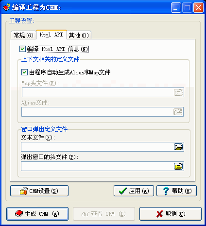

您可以通过选取程序文件菜单下的"编译指定工程"并选取"HtmlAPI"跳格看到这个对话框。关于这个对话框的使用请看下面的具体描述.

如果您不需要制作供软件调用的帮助文件，请忽略这里的全部选项。
编译 Html API 信息:只有选中编译 Html API 信息，下面的选项才有效。
由程序自动生成Alias和Map文件
程序默认是选中的.
如果您编译的不同CHM帮助文件都要使用相同的CONTEXT-ID(比如您编写的上下文相关的帮助文件需要提供不同语言的版本),您可以在这里分别指定您希望使用的Alias和Map文件,这样程序就不再自动生成这两个文件了.
Map头文件:
请指定您的上下文帮助的定义文件。
如果这里为空或指定的文件不存在，程序将自动输出Map头文件。
Alias文件:
请指定您的上下文帮助的定义文件。
如果这里为空或指定的文件不存在，程序将自动输出Alias文件。
文本文件:
请指定您需要加入到CHM里的纯文本文件。
弹出窗口的头文件:
请指定您需要加入到CHM里的关于弹出窗口帮助的文件。
| 版权所有 © 2000-2007 国华软件 保留全部权利. |